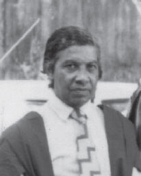
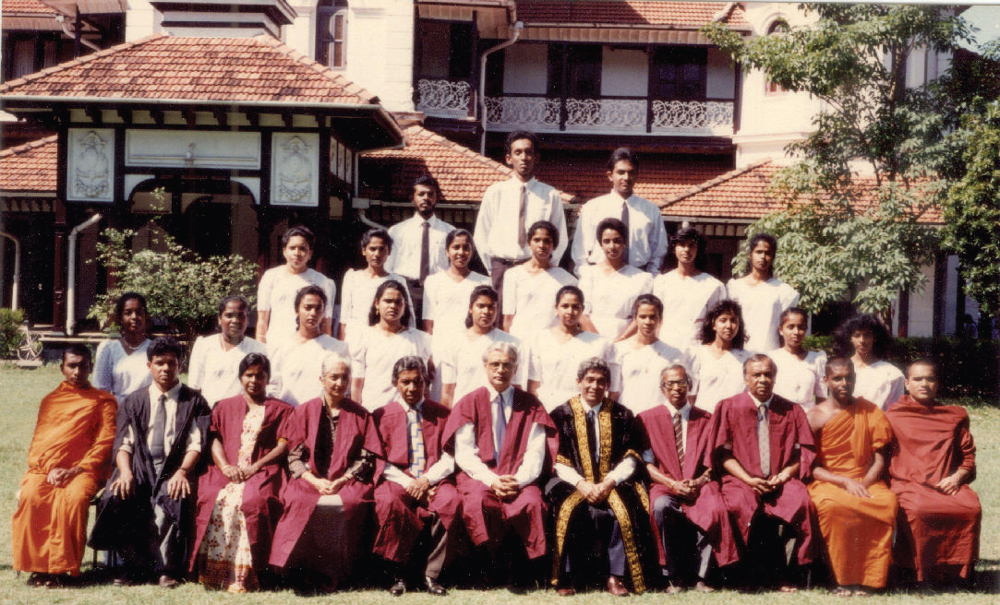

Late Professor Tissa Jayawardena
Emeritus Professor Tissa Jayawardena of the Sinhala Studies Department of the University of Colombo, Sri Lanka, is a renowned scholar, intellectual and linguist in the university field. He is admired immensely among students for his interesting approach to teaching modern linguistics.
Early life and joining the Department of Sinhala Studies, University of Colombo
Born in 1939 in Panana Village, Kegalle situated in Sabaragamuwa Province, Sri Lanka named R. P. T. Jayawardena, Prof. Jayawardena obtained his Bachelor of Arts degree from the University of Peradeniya. He joined the Sinhala Department of the University of Colombo, Sri Lanka, in 1966 at the very beginning of its inception. He studied modern linguistics at the Institute of Oriental and African Studies affiliated with the University of London, a learning hub with close ties to the University of Ceylon and received his PhD in 1970 there.
Sinhala Department special student batch with Sinhala Department lecturers of University of Colombo, Sri Lanka 1975
Department of Linguistics, University of Colombo
1968 was a turning point in linguistic studies in Sri Lanka. Until then, modern linguistics was taught as a course in the department of Sinhala or English. But in 1968, linguist was considered a separate study field and the Department of Linguistics was established at the University of Colombo. In this institute, linguistics was taught in all three national languages: Sinhala, Tamil and English. The degree course consisted of four academic years. Professor Tissa Jayawardena was an influential academic in teaching this course excelling at his modern linguistic enthusiasm. Many Sri Lankan linguists who teach or do linguistic studies in universities across Sri Lanka were once students of his and this course.
The subjects of the course were as follows:
- Academic Year one subjects
- Academic Year two subjects
- Academic Year three subjects
- Academic Year four (Final year)subjects
II Academic Year one
- Introduction to Linguistics
- Phonetics
- Morphology
II. Academic Year two
- Language and Culture
- Language and Society
- Historical Linguistics
III.Academic Year three
- Syntax
- Modern Linguistic Theories
- Phonemics
- History of Linguistics
- Semantic Theories
- Modern Sinhala
- Modern Tamil
IV. Academic Year four (Final year)
- Generative Grammar
- Psycholinguistics
- Language Style Studies
- Dialect Studies
- Lexical Studies
The Head of the Sinhala Studies Department of the University of Colombo, Sri Lanka (1996-1999)
Following his studies at London University in 1970, he returned to the Sinhala Department of the University of Colombo with the University reforms in 1972 and was transferred to the University of Kelaniya to teach in the Department of Linguistics. In 1979 when the University of Colombo was allowed to teach the subject of linguist, he returned to the Sinhala Department of the University of Colombo once again and was the head of the Department from (1996-1999).
A portrait of Late Professor Tissa Jayawardena around the time he was the head of the department.
Laying the foundation of Buddhist studies Department at University of Colombo
Buddhist studies were taught at the University of Colombo earlier, but from 1965 to 1970 it was discontinued due to university reforms. Fortunately, during the tenure Professor Tissa Jayawardena he served as the head of the department, the subject was brought back by the strong conviction of the late Prof. M.B. Ariyapala (Emeritus Professor of Sinhala, University of Colombo), as a result marking the establishment of The Buddhist studies Unit of the university of Colombo.
Sinhala Department special student batch with Sinhala Department lecturers with Vice Chancellor of University of Colombo, Sri Lanka. 1990/1991
Improvements in the Department
Also, it was during his tenure as a department head that the traditional system of studies was converted into a modern semester studies system. He was also an influential factor in sorting out the necessary lecture halls for the department with the Arts Faculty.
Engaging Undergraduates in Publishable Research
To further the quality of scholars, he established a monthly system where all final year students are encouraged to present their own research articles with the availability of feedback and reviewed from an expert from another institute. This encouraged many of the current scholars to begin their scholarly research careers in Linguistics.
His Lifelong Service, the Lasting Impact and Legacy he left behind
After many years of service, he retired and joined the university teaching as a visiting lecturer. His contribution to the Department of Linguistics at the University of Kelaniya is noteworthy. He edited the Sinhala Language textbooks in the National curriculum for many years including the ones which are in circulation in Sri Lanka today.
Professor Jayawardena, who worked as an external lecturer upon retirement in several universities including Sri Jayawardenepura University and Kotalawala Defense University, gave his academic contribution to the studies and evaluation activities of several institutions including the Sri Lanka Examination Department.
He was an authentic scholar on translation methods and worked as a member of the Rajya Sahitya Award evaluation committee. Professor Jayawardena was also a member of the governing council of Kelaniya University.

Late Professor Tissa Jayawardena
Professor Tissa Jayawardena passed away in November 2015 at the age of 76. His legacy the modern linguist studies in Sri Lanka remains. For those who had the honour of knowing him in person, he became a role model likes of which has never been seen before.
University of Colombo Website
about author
Anjanee S. Wijewardana